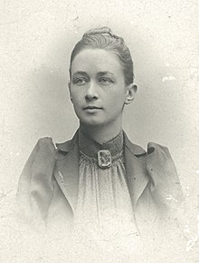

Primordial Chaos
- Hilma af Klint -
|
She was a Swedish artist and mystic whose paintings are considered among the first major abstract works in Western art history. A considerable body of her work predates the first purely abstract compositions by Kandinsky, Malevich and Mondrian. She belonged to a group called "The Five", comprising a circle of women inspired by Theosophy, who shared a belief in the importance of trying to contact the so-called "High Masters"—often by way of séances. Her paintings, which sometimes resemble diagrams, were a visual representation of complex spiritual ideas. According to H.P. Blavatsky, mediumship was a faulty practice, leading its adepts on the wrong path of occultism and black magic. However, during their meeting, Steiner stated that af Klint's contemporaries would not be able to accept and understand her paintings, and it would take another 50 years to decipher them. Of all the paintings shown to him, Steiner paid special attention only to the Primordial Chaos Group, noting them as "the best symbolically". After meeting Steiner, af Klint was devastated by his response and, apparently, stopped painting for 4 years. Steiner kept photographs of some of af Klint's artworks, some of them even hand-coloured. Later the same year he met Wassily Kandinsky, who had not yet come to abstract painting. Some art historians assume that Kandinsky could have seen the photographs and perhaps was influenced by them while developing his own abstract path. Later in her life, af Klint made a decision to destroy all her correspondence. |
 |